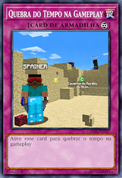
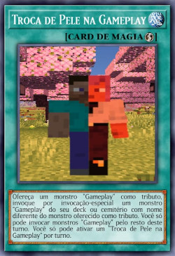

Quebra do tempo na Gameplay

Ative esse card para quebrar o tempo na Gameplay.
Troca de Pele na Gameplay

Ofereça 1 monstro "GAMEPLAY" como Tributo; Invoque por Invocação-Especial 1 "GAMEPLAY" com nome diferente do Tributo, do Deck ou Cemitério. Você só pode Invocar "GAMEPLAY" neste turno. Só pode ativar 1 "Troca de Pele na Gameplay" por turno.